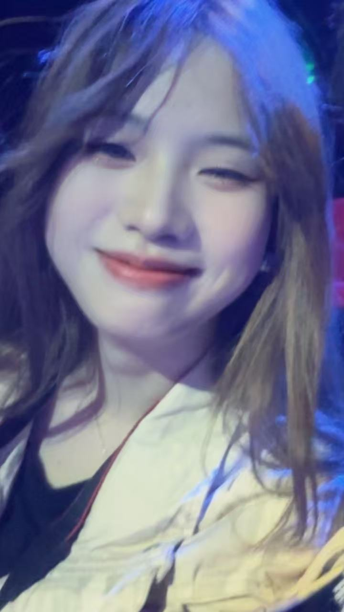
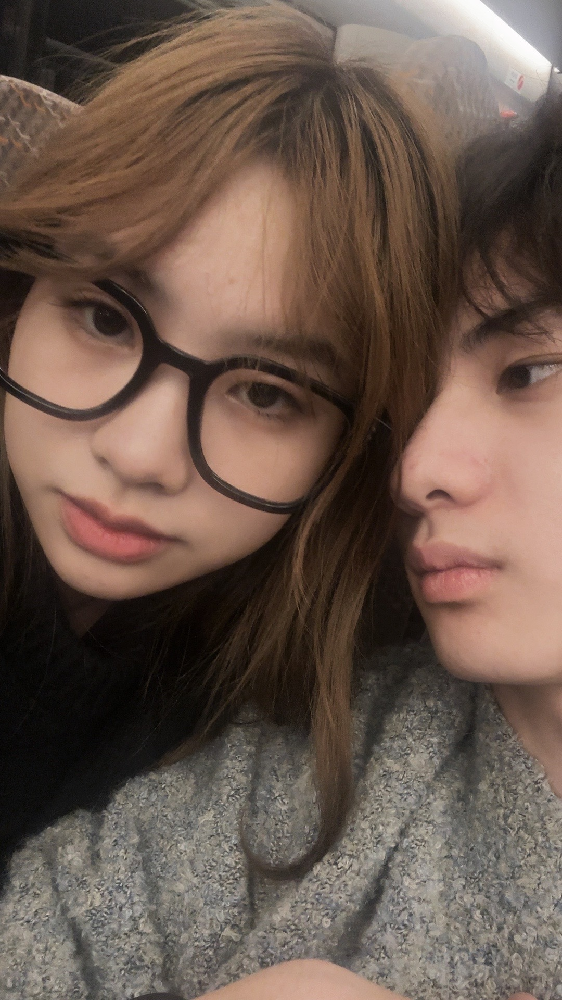
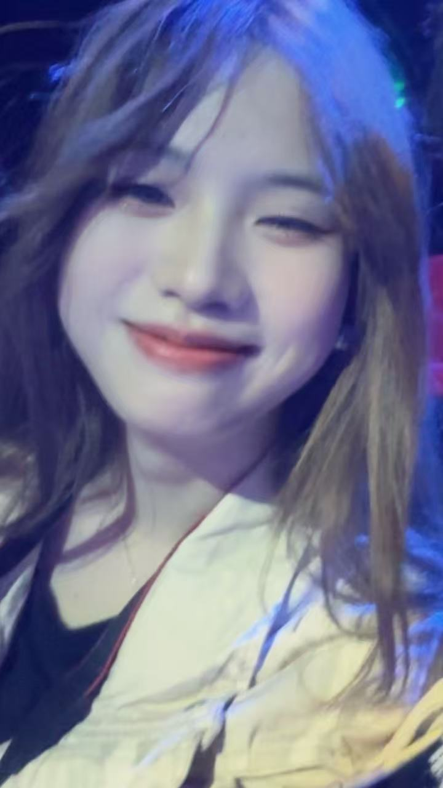
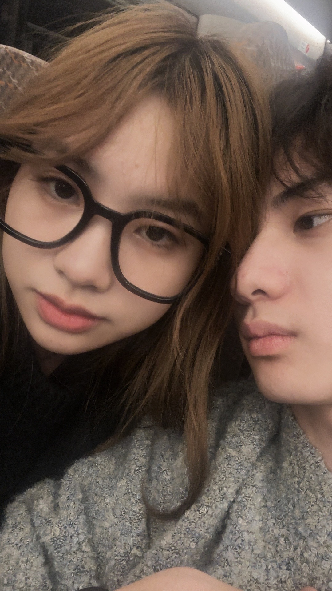
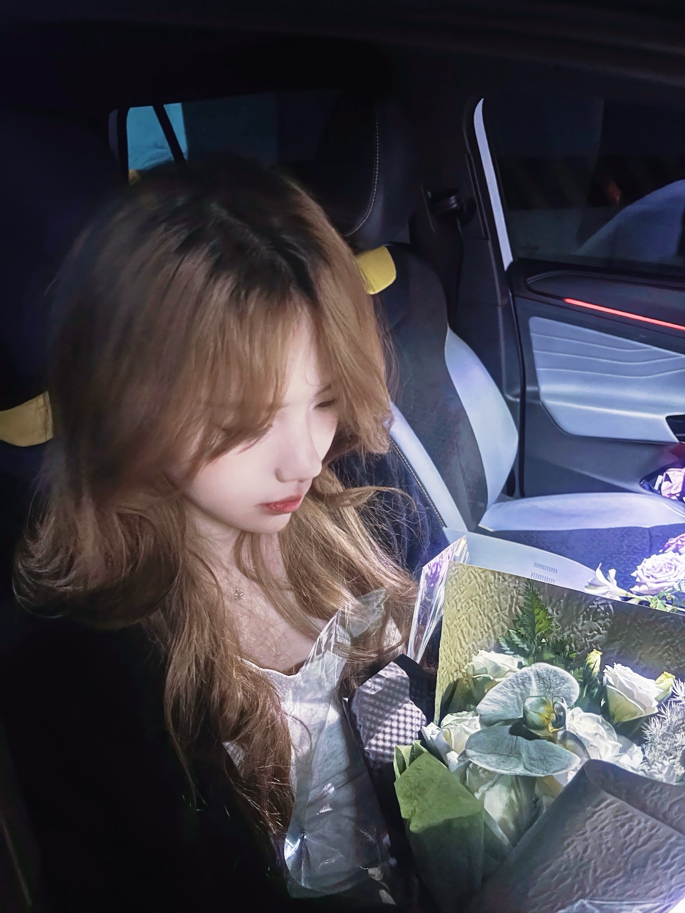
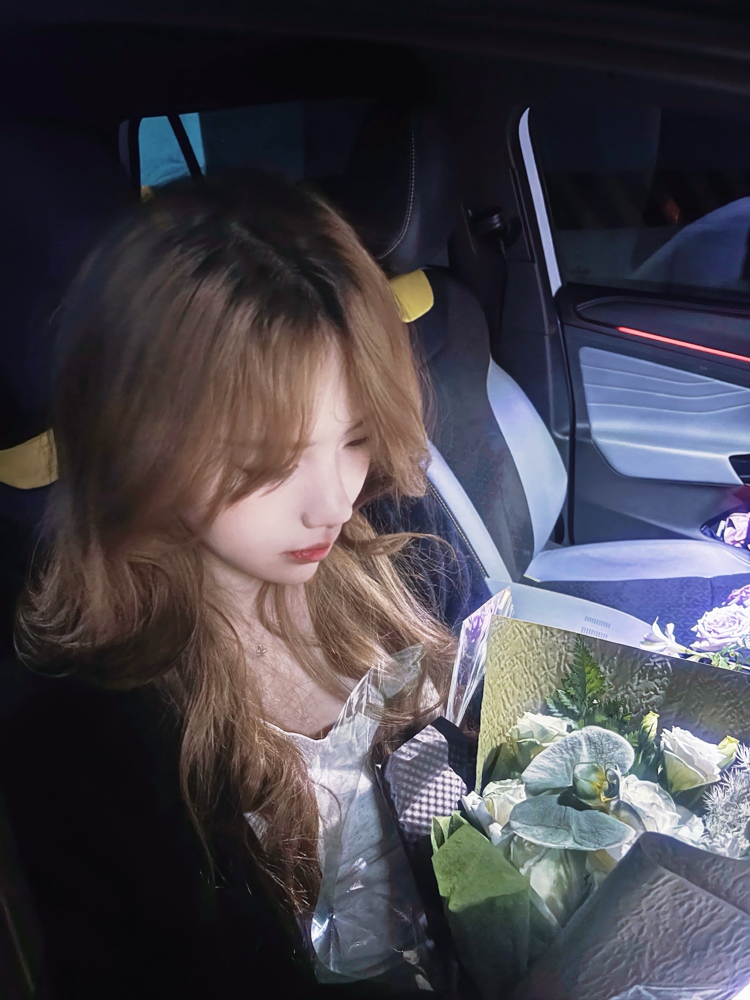
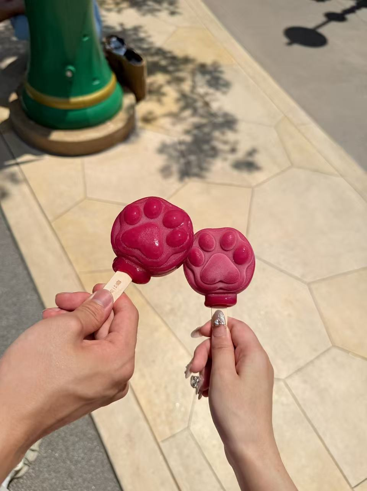
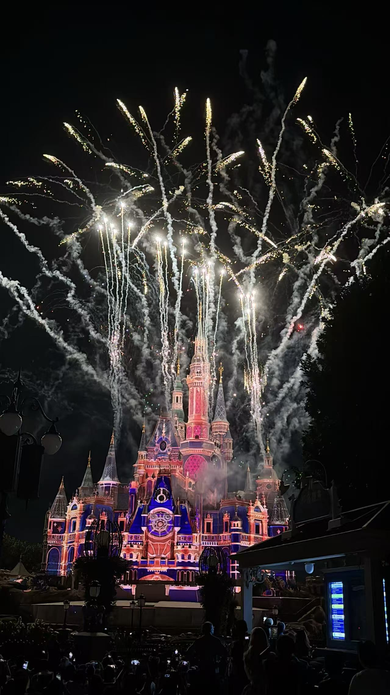
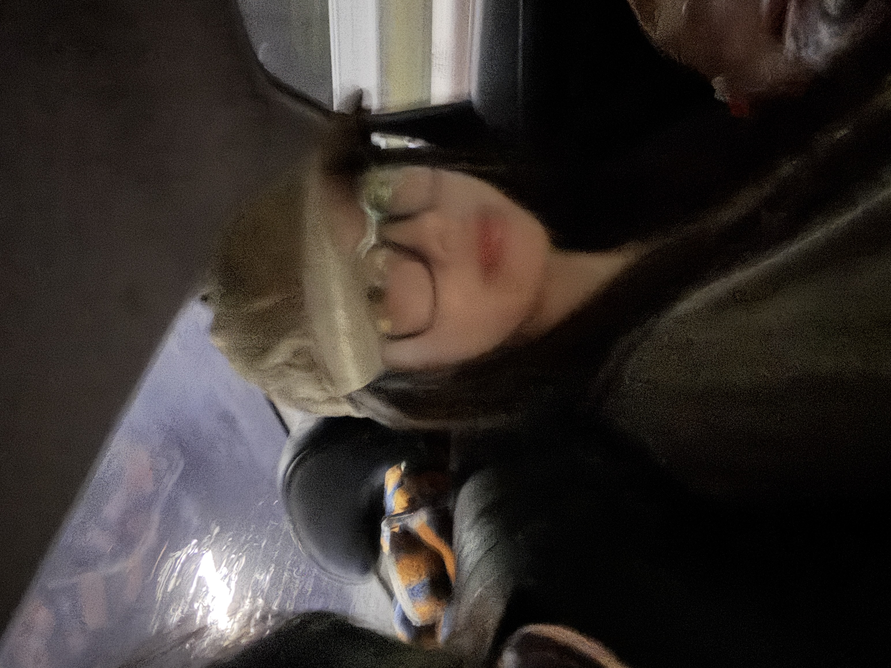

第一次的印象永远是很重要的。小喜第一次的妆确实很好看很心动捏。不管是穿搭还是发型都很好看。戴着眼镜就是可爱，而且还香香的捏。
然后咱们就一起去长沙看比赛了。之后在酒店请摄影师又出片了呢。当时我还很不爽，因为你拍照的时候还不让我看，我寻思说那么见外呢。
之后又去珠海长隆玩啦。那个时候脸圆嘟嘟的真可爱。你总说你胖了，但我觉得还是有点肉肉好看的。因为你眼镜很大，脸太瘦的话其实不好看。有点肉肉身体也好也说明喜宝宝胃口好能吃。千万别学我的作息和饮食呢。
 



宝宝专门来给我过生啦！最有感觉的一张照片和角度。宝宝准备的生日礼物都很喜欢，鼠标到现在都还舍不得用呢。全都送到心坎上了。
还一起去文殊院呢，第一次排队摸这个福，以前我也从来不排的。祝LHL心想事成呢。文书菩萨保佑你哦。
 

后面还说一起去洛带古镇玩拍照的，结果那天吵架啦。没看到美美的宝宝。你给我发的这个视频是最爱，太有感觉了。美瞳也好看，音乐也配的好，简直绝绝子。如果说成片照片是一股清冷感的话，那这个视频就多了一份亲切和可爱。这个视频我经常睡前看一看，甚是喜爱捏。可以排到top1。
第一次和喜宝宝一起看林俊杰演唱会捏，氛围确实不错呢。但是因为没给你拍照出片让你不开心咯，不然会更开心的吧。
宝宝给我带来亲手做的小人偶，确实很像我呢，还背了一个小鱼书包。简直太心灵手巧啦! 可爱可爱，跟你送我的小黄龙全部摆在一起珍藏着呢。
然后后面是去贵州玩呢，但是都没咋拍照都玩啦，但是抓到一只小monkey。嘿嘿嘿。
这个场景我很喜欢，粉粉的，也祝愿宝宝福气满满。
之后咱就去心心念念的迪士尼啦。宝宝顶着三十多度的大太阳还戴假发穿裙子可太辛苦啦。不过确实很好看捏，小公主似的。太出片啦。绝美绝美。老样子对镜出片。
当然还有经典情侣照比如狐狸和兔子脑袋还有米奇帽子都拍啦，不得不说宝宝考虑的确实周到。
一起在疯狂动物城区吃了爪爪冰棒，还拍了照片呢，可爱可爱。
还是不错滴，拍了照也把好玩的都差不多玩完了，最后烟花也看啦。看着宝宝在烟花光下映照的侧脸，我在烟花下祝我们如愿以偿。果然和喜欢的人去迪士尼是最浪漫的事情。也不会再有下一个21岁能在上迪看眼花啦。
转眼又到我新的一年出去的时候了。时光如梭。时间好快，上飞机的前一刻才开始后悔。怎么都没说去重庆哪里玩一下，就宅家里啦。我们应该出去逛街漫步，一起去体验新东西，一起去小宠物店，一起去做手工银饰啥的嘛。俺反思没有计划好，就在家里混吃等死啦哈哈哈哈。
不过宝宝做的饭确实好吃奥，超绝土豆丝。不错不错! 但是可惜了咱没有说拍什么照片啥的捏。应该还是找约拍的去哪里拍的好看的照片纪念下捏。 不过有宝宝送我去机场拍的嘿嘿。视频太长了传不了噜。
没事滴，没有合照说明我们还有再见的时候啦！
